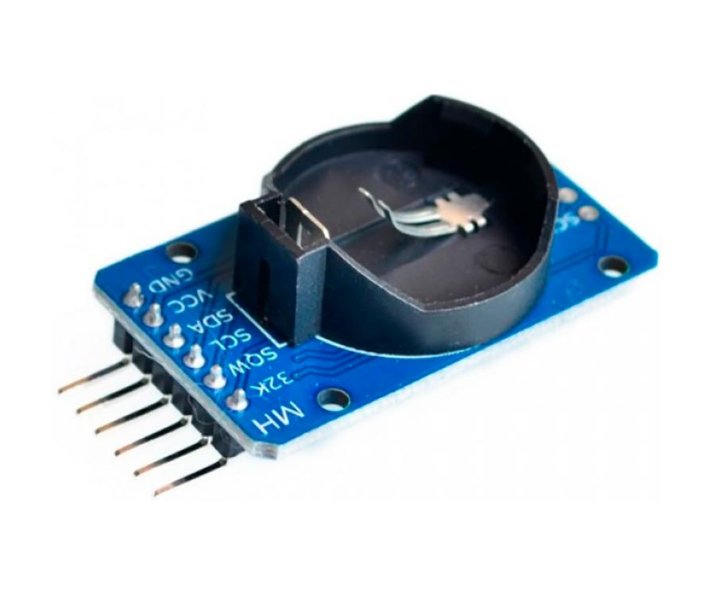

Технические характеристики
- календарь до 2100 года
- погрешность : +/- 4ppm
- два будильника
- выход стабильной частоты : 1-32768 Гц
- напряжение питания : 2,7 - 5,3 В
- напряжение батарейки : 2,3 - 5,3 В
- ток потребления : 250 мкA
- ток потребления от батарейки : 3 мкA
- порог переключения на батарейку : 2,6 В
- интерфейс : I2C
- размеры : 40х22 мм
Назначение контактов
Модуль имеет 6 выводов: